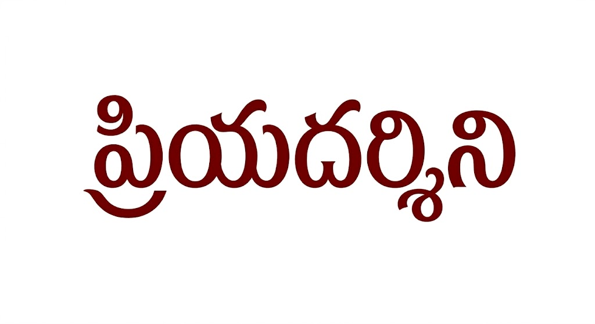

About Me
I am currently an Assistant Professor in the Department of Computer Science and Information Systems at BITS Pilani, Hyderabad Campus.
Prior to joining BITS, I was a Postdoctoral Researcher in the Department of Mathematics at the Faculdade de Ciências da Universidade de Lisboa (FCUL). I was also a member of LASIGE, an R&D unit at FCUL, where I worked with Prof. Bruno Loff on the HoFGA (Hardness of Finding Good Algorithms) project.
I completed my PhD at TIFR Mumbai, where I was fortunate to be advised by Prof. Prahladh Harsha. During my time there, I also worked with Prof. Arkadev Chattopadhyay in the area of Communication Complexity for my Qualifier project, and collaborated with Prof. Ramprasad Saptharishi on problems related to Coding Theory.
My foundations in Theoretical Computer Science were built during my BSc and MSc at the Chennai Mathematical Institute (CMI). I thoroughly enjoyed the strong Math and CS groundwork I received there, alongside an excellent peer group that I will always cherish. I also did a bulk of my coursework at IMSc, where teachers like V. Arvind, Meena Mahajan, and R. Ramanujam had a profound impact on my decision to pursue theoretical computer science. During my MSc, I spent a wonderful semester visiting Prof. Srikanth Srinivasan at IIT Bombay to work on Arithmetic Circuit Complexity.
It all started in high school with my teacher, Sivanand sir, who first introduced me to the joy of mathematics and problem-solving.
Schools & Workshops
- Le le kaleidoscope de la complexité (2025) | Marseille, France
- S3CS | Stockholm, Sweden
- Indo-US Workshop on Pseudorandomness | IISc Bangalore
- NMI Workshop on Complexity and Cryptography (2017) | IISc Bangalore
- NMI Workshop on Arithmetic Complexity (2017) | IMSc Chennai
- Mysore Park Workshop (2016) | Infosys Campus, Mysore
Visiting Positions
- Visiting Scientist (2022) | IISER Berhampur
- Visiting Scientist (2017) | Weizmann Institute, Israel
Experience
Education
 -
2023
-
2023

- 2001